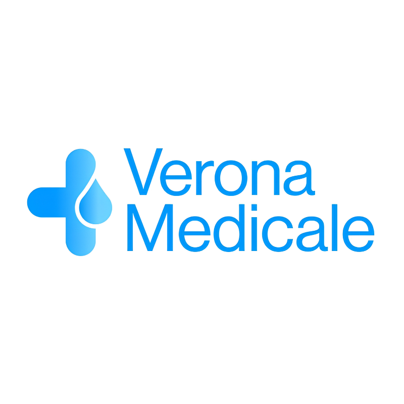

Urologo
Dott. Marco Beringi
Vice primario di Urologia. Si occupa di prevenzione, diagnosi e cura delle patologie dell'apparato urinario e genitale maschile, con percorsi personalizzati.
Profilo su MioDottore (si apre in una nuova scheda)Verona Medicale · Negrar di Valpolicella
Un centro medico dedicato alla prevenzione, alla diagnostica e alla salute della persona. Punto prelievi, visite specialistiche e servizi infermieristici, con professionalità e attenzione alle tue esigenze.

Chi siamo
Siamo Verona Medicale e nasciamo dall'evoluzione del punto prelievi ButterflyNegrar.
Oggi riuniamo in un unico luogo prevenzione, diagnostica, visite specialistiche e assistenza infermieristica. Il punto prelievi resta parte integrante della nostra attività e ogni giorno lavoriamo con professionalità, ascolto e chiarezza.
All'interno del nostro centro collaboriamo con più specialisti, ciascuno dedicato alla propria area di competenza, per accompagnarti con percorsi attenti alle tue esigenze.
Urologo
Vice primario di Urologia. Si occupa di prevenzione, diagnosi e cura delle patologie dell'apparato urinario e genitale maschile, con percorsi personalizzati.
Profilo su MioDottore (si apre in una nuova scheda)Cardiologo
Medico cardiologo. Si prende cura della salute cardiovascolare con visite specialistiche ed esami di cardiologia e angiologia.
Profilo su MioDottore (si apre in una nuova scheda)Nutrizionista
Costruisce percorsi sulle esigenze di ogni persona, dai piani nutrizionali personalizzati alla nutrizione clinica e sportiva.
A chi ci rivolgiamo
Dalla prevenzione alle visite specialistiche, fino all'assistenza domiciliare, offriamo servizi dedicati alle persone e alle loro necessità.
Per chi desidera effettuare analisi di laboratorio, check-up e visite specialistiche, con informazioni chiare e un servizio organizzato.
Per chi necessita di prelievi domiciliari o prestazioni infermieristiche compatibili con il servizio disponibile, secondo le indicazioni e le modalità previste.
Per aziende interessate alle aree di medicina del lavoro e welfare aziendale, secondo le prestazioni effettivamente attive e disponibili.
Il nostro approccio
La salute richiede competenza, chiarezza e attenzione alle esigenze individuali. Per questo ci impegniamo a offrire servizi sanitari organizzati, dedicati alla prevenzione, alla diagnostica e all'assistenza.
Valorizziamo le competenze dei professionisti e la qualità delle prestazioni offerte.
Dedichiamo attenzione alle esigenze delle persone e all'importanza di una comunicazione chiara.
Promuoviamo l'accesso a controlli, analisi e valutazioni utili alla tutela della salute.
Riuniamo servizi diagnostici, visite specialistiche e prestazioni infermieristiche in una stessa realtà sanitaria.
I servizi
Servizi di laboratorio, visite specialistiche e assistenza dedicati alla prevenzione, alla diagnostica e alle esigenze individuali.


Come funziona
Consulta le prestazioni disponibili e individua quella di tuo interesse.
Per le visite specialistiche, contatta la segreteria per informazioni e prenotazioni.
Per il punto prelievi, verifica le modalità di accesso e l'eventuale preparazione richiesta.
Accedi al servizio secondo l'appuntamento o le modalità previste, presso il centro oppure a domicilio quando disponibile.
Dove riceviamo
Punto prelievi: lunedì–sabato, 07:00–10:00
FAQ
Sì, presso il nostro punto prelievi puoi effettuare esami anche senza prenotazione. Per analisi particolari o che richiedono preparazione ti consigliamo di contattare la nostra segreteria.
Alcune prestazioni possiamo effettuarle anche senza ricetta. Le condizioni dipendono dal tipo di esame e dalle disposizioni applicabili.
Ti accogliamo al punto prelievi dal lunedì al sabato, dalle 07:00 alle 10:00.
Sì, offriamo un servizio di prelievi domiciliari. Per conoscere modalità, disponibilità e condizioni puoi contattare la nostra segreteria.
Tra le prestazioni che proponiamo figurano urologia, cardiologia, angiologia e consulenze nutrizionali. Per disponibilità e prenotazioni ti invitiamo a contattare la nostra segreteria.
Puoi contattarci telefonicamente al 339 359 1077 oppure scriverci all'indirizzo verona.medicale@gmail.com.
Contatti